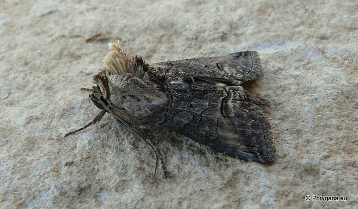
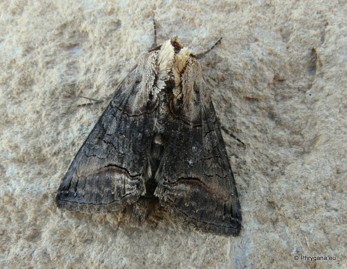
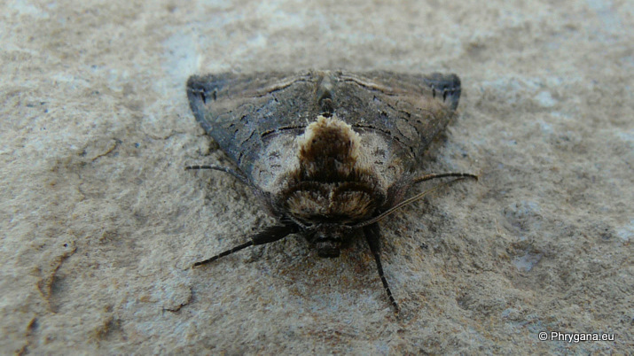

| PHRYGANA | Fauna | Flora |
additions nouveautés |
espèces species |
contact -
info - commentaires phrygana1 (at) gmail.com |
| diversité crétoise -- Cretan diversity | |||||
| Abrostola triplasia (Linnaeus 1758) |
| 178 | Fauna | NOCTUIDAE | Plusiinae | Abrostola |
 Abrostola triplaisa Melambes (Agios Giorgos) 20 avril 2010 |
| Envergure: 28 - 36 mm. Couleur de fond brun noirâtre; base des ailes couleur paille à brun clair rougeâtre | |
| Chenille: oligophage: Urticaceae | |
| Espèce plurivoltine. | |
| Période de vol: avril, septembre, octobre | |
| Statut en Crète: indigène -- native | |
| Biotopes en Crète: phrygana, olivaies, garrigue, champs cultivés, bords de chemins. | |
| Distribution: Europe méridionale, Afrique du Nord, Moyen-Orient, Chine, Japon | |
|
 Abrostola triplaisa Melambes (Agios Giorgos) 20 avril 2010 |
|
 Abrostola triplaisa Melambes (Agios Giorgos) 20 avril 2010 |
| 11 septembre 2010 |
| © paul fontaine -- © Phrygana.eu 2007 -- 2013 |